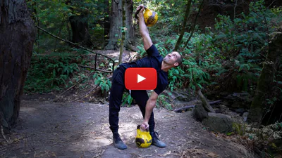

B590 · How to Upgrade the Classic KB Windmill
Hello {first_name},
Foundations are for building on. The windmill is a fantastic foundational movement. It loads your body at angles almost never loaded with other movements.
Once you’re comfortable with the windmill, it’s time to add in some progressions. These progressions give you the chance to become more masterful at moving your body with strength and precision.
If you like your shoulders… If you think the sides of your body are important… And how can you say “no” to those 2 statements! 😉…
Then click here to watch this under 5 minute video and program some windmill progressions into your training.

Keep training intentionally, Mike
|